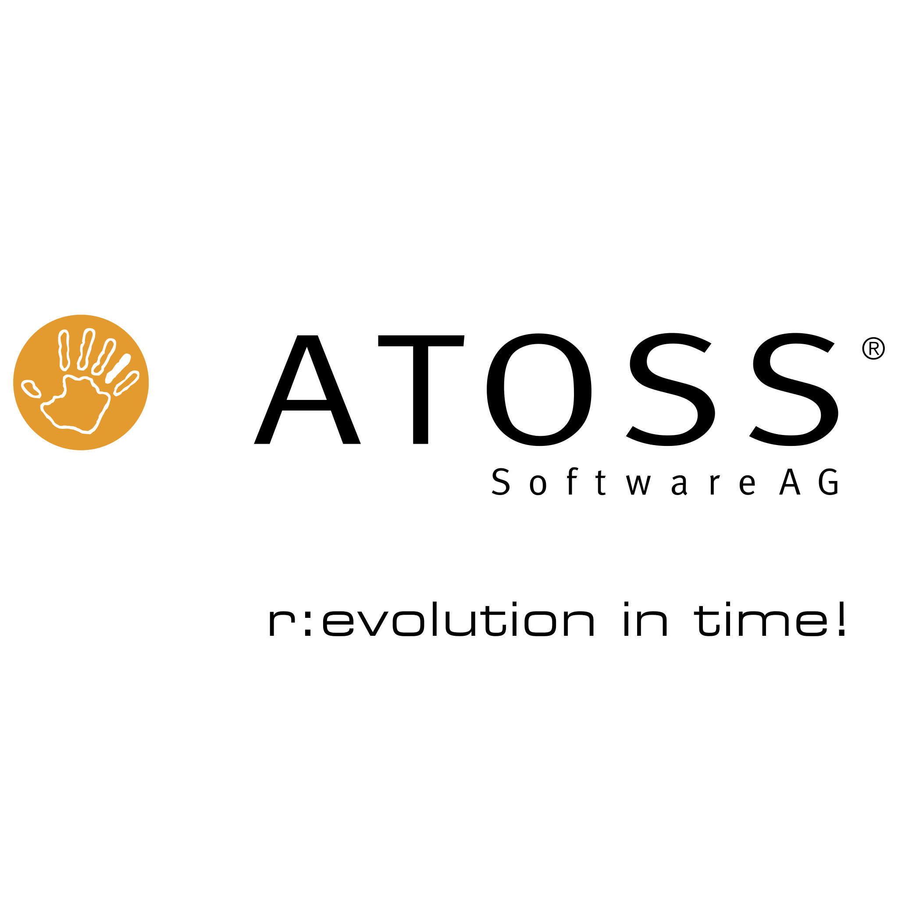
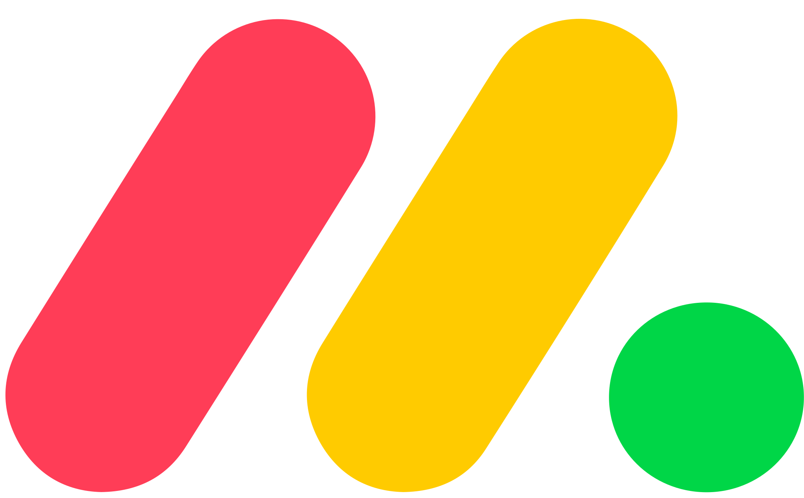

Wir verbinden HR-Systeme in regulierten Produktionsumgebungen so, dass Daten automatisch und prüfungssicher fließen — pragmatisch, messbar wirksam.
Drei Muster, die wir in fast jedem Erstgespräch hören.
HR-Bereiche, die nichts voneinander wissen: Neue Mitarbeitende werden manuell in jedes System eingetragen — mit allen Fehlerquellen, die dazugehören.
In regulierten Umgebungen ist lückenlose Nachvollziehbarkeit Pflicht. Datentransfers ohne automatisierten Audit Trail werden bei der nächsten Inspektion zum Befund.
Headcount, Betriebsratsunterlagen, Compliance-Reports — alles manuell zusammengezogen, zeitintensiv, fehleranfällig. Das Potenzial Ihrer Systemdaten bleibt ungenutzt.
Kein Beratungsmarathon. Wir kommen mit konkreten Ergebnissen.
Wir schauen uns an, welche Systeme im Einsatz sind, wo Daten heute manuell wandern und wo der größte Hebel liegt — ohne Vorannahmen, ohne Vendor-Präferenz.
Manchmal ist das eine Integration bestehender Systeme über APIs und Middleware. Manchmal lohnt ein gezieltes Upgrade. Wir empfehlen, was tatsächlich sinnvoll ist — und setzen beides um.
Jede Lösung ist auf regulierte Umgebungen ausgelegt: Nachvollziehbarkeit, Audit Trail, Validierbarkeit. Nichts, was im Nachgang nachgerüstet werden muss.
Projektverlauf
Ein abgeschlossenes Projekt — exemplarisch für das, was wir tun.
Pharma · HR · Payroll
Internationaler Pharmahersteller, 5.000+ Mitarbeitende, DACH
Aufbau einer integrierten HR-Systemlandschaft: Prozessanalyse, Zielarchitektur und technische Umsetzung für Personio, ATOSS und DATEV über mehrere Standorte hinweg. Zeiterfassung, HR-Stammdaten und Payroll liefen in drei voneinander isolierten Systemen — jede Gehaltsabrechnung erforderte mehrstündige manuelle Abstimmungen, Stammdaten wurden doppelt gepflegt, Auswertungen für Betriebsrat und Compliance per Hand erstellt.
Ergebnis
Klare Systemarchitektur, automatisierte Datenflüsse, deutlich weniger manuelle Prozesse


Basierend auf Projekten in Pharma-, Medtech- und Chemieunternehmen im DACH-Raum.
Durch automatisierte Übergaben zwischen ATS, HR-Core und Payroll
Weniger Korrekturrunden, weniger Rückfragen, weniger Nacharbeit
Betriebsratsunterlagen und Auswertungen direkt aus integrierten Systemen
Stammdaten laufen automatisch in alle verbundenen Systeme — ohne manuelle Übergaben
Wenn Ihr Team regelmäßig Zeit mit manuellen Datentransfers zwischen HR-Systemen verbringt — dann ja. Wir sagen Ihnen in 15 Minuten, ob und wie wir helfen können.
Thümecke Business Intelligence Solutions unterstützt mittelständische Unternehmen und wachsende Organisationen bei der Automatisierung von Geschäftsprozessen und der Integration komplexer Systemlandschaften.
Unsere Stärke liegt in der Verbindung von Fachbereichsverständnis mit technischer Umsetzungskompetenz – von der Prozessanalyse über die Systemarchitektur bis zur produktiven Lösung. Moderne Technologien, einschließlich KI, setzen wir dort ein, wo sie echten Mehrwert erzeugen.
Wir arbeiten pragmatisch, lösungsorientiert und eng mit unseren Kunden zusammen. Unser Ziel: schnelle, tragfähige Ergebnisse, die im Betrieb bestehen – ohne unnötigen Overhead.
Wir kennen den HR-Alltag. Und wir kennen die Systeme dahinter.
Viele Technologen bauen elegante Lösungen, die am HR-Alltag vorbeigehen. Viele HR-Berater kennen die Prozesse, aber nicht die Systeme. Wir kennen beide Seiten: das Prozessverständnis aus dem operativen HR und die technische Tiefe, um es sauber zu integrieren.
Erzählen Sie uns kurz, wie Ihre Systemlandschaft heute aussieht — wir sagen Ihnen direkt, ob und wo wir helfen können.